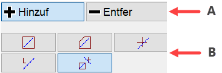
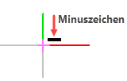

Damit Sie in ISBCAD Elemente bearbeiten können, müssen Sie sie zunächst auswählen. In allen Menüs, in denen Zeichenelemente bearbeitet werden können, stehen Ihnen im Funktionsbereich verschiedene Funktionen zur Auswahl von Elementen zur Verfügung. Sie können einzelne Elemente auswählen, beliebig viele Rahmen aufziehen und Gruppen sowie einzelne Elemente innerhalb von Gruppen selektieren.
 |
A. Auswahlmodus; B. Auswahlfunktionen |
|
Elemente auswählen oder zur Auswahl hinzufügen Klicken Sie den Modus [Hinzuf] an. In diesem Modus können Sie mit einer beliebigen Auswahlfunktion Elemente auswählen. Solange die Funktion aktiv ist, können Sie weitere Elemente zur Auswahl hinzufügen und zwischen den verschiedenen Auswahlfunktionen wechseln. |
|
Elemente aus der Auswahl entfernen Klicken Sie den Modus [Entfer] an. In diesem Modus können Sie mit einer beliebigen Auswahlfunktion Elemente aus der Auswahl entfernen. Anstatt auf [Entfer] umzustellen, können Sie durch Drücken der Umschalt-Taste vorübergehend auf [Entfer] wechseln. Dazu wird am Cursor ein Minuszeichen eingeblendet.  |


Elemente im Rechteck auswählen
Für die Auswahl von Zeichenelementen stehen Ihnen zwei Modi zur Verfügung: ·Wenn Sie den Rahmen von links nach rechts aufziehen, werden alle Elemente markiert, die sich vollständig im Rahmen befinden. ·Linien: Anfangs- und Endpunkt; ·Kreise/Teilkreise: komplett; ·Texte: der Punkt links unten am Textanfang; ·Textfelder: der komplette Textrahmen. ·Wenn Sie den Rahmen von rechts nach links aufziehen, werden auch Elemente markiert, die sich nicht vollständig im Rahmen befinden.
§Klicken Sie den Punkt an, von dem aus der rechteckige Rahmen aufgezogen werden soll. [1.Punkt]. §Bewegen Sie den Cursor, um die gewünschte Rahmengröße zu erhalten, und klicken Sie den zweiten Punkt an. [1.Punkt]. Die Elemente werden markiert. Sie können sofort einen weiteren Rahmen aufziehen, Elemente hinzufügen oder entfernen. §Bestätigen Sie die Auswahl mit einem Rechtsklick.
Elemente im Polygon auswählen
§Klicken Sie auf die Anfangsposition für das erste gerade Segment und klicken Sie ein zweites Mal auf die Position, an der das erste Segment enden und das nächste Segment anfangen soll. Klicken Sie weiter, um die nächsten Segmente zu erstellen. Sie können maximal 20 Punkte anklicken. [1.Punkt]; [2.Punkt]. §Drücken Sie die rechte Maustaste, um den Polygonzug zu schließen. Sie können sofort einen weiteren Rahmen bilden, Elemente hinzufügen oder entfernen. Einzelelemente auswählen
§Klicken Sie nacheinander die zu bearbeitenden Elemente an. [Welches Element]. Die Elemente werden markiert. §Drücken Sie die rechte Maustaste, wenn Sie alle gewünschten Elemente selektiert haben. Sie können sofort weitere Elemente selektieren. Zuletzt markierte Elemente auswählen
§Aktivieren Sie diese Schaltfläche, um alle Elemente, die Sie zuvor ausgewählt haben, erneut zu markieren. Jetzt können Elemente hinzugefügt oder entfernt werden. Elemente einzeln oder über Rahmen auswählen (automatische Erkennung)
Es können Einzelelemente und Elemente im Rechteck gleichzeitig ausgewählt werden. Wenn ein Element im Cursorbereich liegt, wird die Auswahlfunktion [Einzelelemente auswählen] aktiviert und das Element wird beim Anklicken markiert. Befindet sich der Cursor im "leeren" Zeichenbereich (kein Element wird gefangen), wird beim Anklicken automatisch ein Rechteck aufgezogen. §Ziehen Sie einen Rahmen auf, der die Auswahl umschließt. [1.Punkt/Element]; [2.Punkt].
und/oder: §Markieren Sie Elemente, indem Sie diese anklicken. Die im Rahmen liegenden Elemente werden markiert. Die angeklickten Elemente werden ebenfalls markiert.
|
|||||||||||||||||||||


Elementgruppen und einzelne Elemente auswählen
ElementgruppenIn ISBCAD werden Elemente, die in einer Abfrageroutine erzeugt worden sind, intern als Gruppe verwaltet. Erzeugen Sie beispielsweise mit [Konst 2 | PosKre] einen Positionskreis, werden beim Anklicken eines Elements dieser Gruppe, z. B. des Positionstextes oder einer Linie, alle Elemente ausgewählt, die zu diesem Positionskreis gehören.
Um Einzelelemente in Elementgruppen auswählen:§Drücken Sie die Strg-Taste und führen Sie einen der folgenden Schritte aus: a)Klicken Sie ein oder mehrere Elemente nacheinander an. b)Elemente über das Aufziehen eines Rahmens auswählen:
Sie können Elemente wieder abwählen, indem Sie auf Entfer umschalten und bei gedrückter Strg-Taste die Elemente aus der Auswahl entfernen. ISBCAD erzeugt die folgenden Elementgruppen automatisch:
|

Anwenderdefinierte Gruppen und einzelne Elemente auswählen
Die Selektion von Elementen in anwenderdefinierten Gruppen [Konst 3 | Gruppe] verhält sich analog zur Auswahl in Elementgruppen. Im Unterschied zu Elementgruppen definieren Sie selbst den Inhalt einer Gruppe. So lassen sich Elemente gezielt zusammenfassen, um diese einfacher auswählen zu können. |
Einzelne Punkte hinzufügen, entfernen oder Auswahl komplett rückgängig machen
In einigen Menüs, wie z. B. bei der Massen- und Schwerpunktermittlung oder beim Vermaßen, stehen Ihnen weitere Funktionen zur Auswahl zur Verfügung.
|


Wenn Sie Elemente selektiert haben, werden die zugehörigen Polygonpunkte und -linien dargestellt, unabhängig davon, ob die Polygondarstellung von Elementgruppen aktiviert oder deaktiviert ist. Die Polygone werden nach der Auswahl in der Farbe für Markieren hervorgehoben.
|
Auswahlfunktionen (Kurzübersicht)
Selektionsart |
Ergebnis |
|
|---|---|---|
Rahmen |
Rahmen links nach rechts oder Polygon |
Markiert alle Elemente, die sich vollständig im Rahmen oder Polygon befinden |
Rahmen rechts nach links |
Markiert alle Elemente, die sich vollständig im Rahmen befinden und vom Rahmen angeschnitten werden |
|
Strg + Rahmen von links nach rechts |
Markiert alle Bestandteile von Gruppen, die sich vollständig im Rahmen befinden |
|
Strg + Rahmen von rechts nach links |
Markiert alle Bestandteile von Gruppen, die sich vollständig im Rahmen befinden und vom Rahmen angeschnitten werden |
|
Einzelklick |
Einzelklick |
Markiert das Element oder die gesamte Gruppe |
Einzelklick auf anwenderdefinierte Gruppe |
1. Klick - Markiert die Obergruppe 2. Klick - Markiert die Untergruppe n. Klick - Markiert ein einzelnes Element |
|
Einzelklick auf eine Elementgruppe |
Markiert die gesamte Gruppe |
|
Strg + Klick |
Markiert das angeklickte Element innerhalb einer Gruppe |
|
Elemente aus Auswahl entfernen |
Umschalttaste + Klick |
Entfernt das Element aus der Auswahl |
Strg + Umschalttaste + Rahmen von links nach rechts |
Entfernt alle Elemente, die sich vollständig im Rahmen befinden |
|
Strg + Umschalttaste + Rahmen von rechts nach links |
Entfernt alle Elemente, die sich vollständig im Rahmen befinden und vom Rahmen angeschnitten werden |
|
|
Hinweise: |
|
·Wenn Sie Zeichenelemente auswählen und absetzen, z. B. beim Kopieren oder Verschieben, entspricht die Neigung des Auswahlrechtecks dem aktuell eingestellten Systemwinkel. ·Wenn Elemente beim Auswählen nicht markiert werden, kann es daran liegen, dass sie im Elemente-Filter ausgeschlossen sind. Prüfen Sie auch, ob die Elemente bzw. deren Folien im Folienmanager gesperrt sind. |
Siehe auch:
·Elemente bei der Selektion ausschließen
·Elemente in Gruppen zusammenfassen
·Elemente anhand gemeinsamer Eigenschaften auswählen und ändern